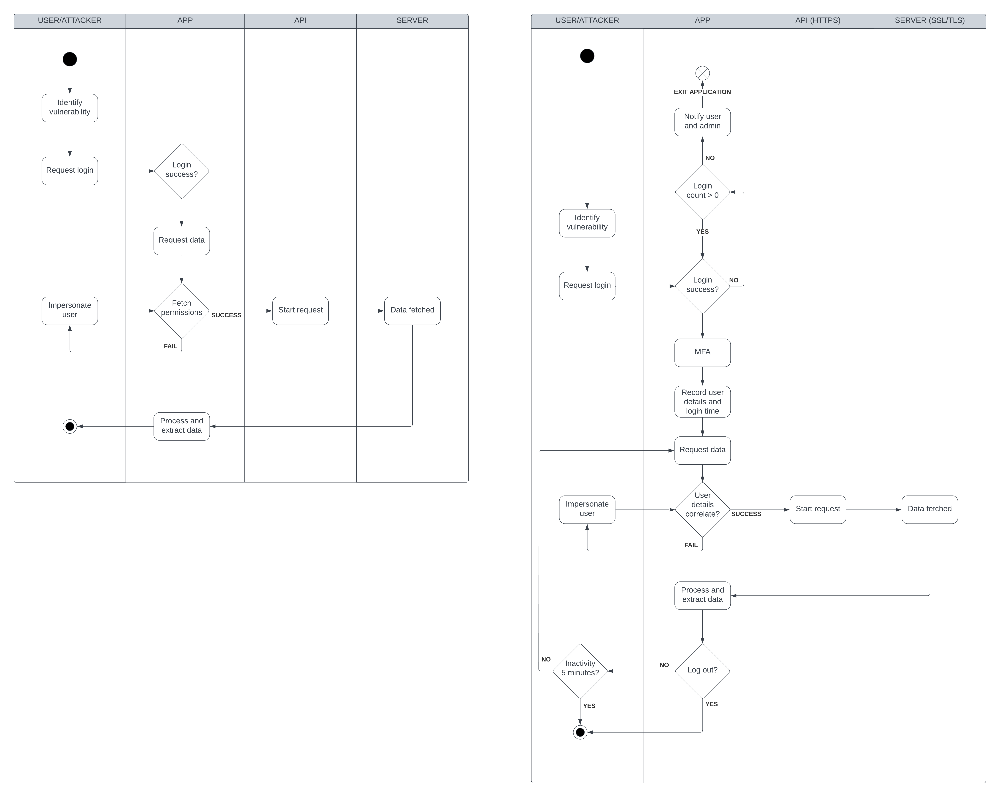

Secure Software Development
Learning outcomes:
- Identify & manage security risks as part of a software development project.
- Critically analyse development problems and determine appropriate methodologies, tools and techniques (including program design and development) to solve them.
- Design and develop/adapt computer programs and to produce a solution that meets the design brief and critically evaluate solutions that are produced.
- Systematically develop and implement the skills required to be effective member of a development team in a virtual professional environment, adopting real-life perspectives on team roles and organisation.
Swot analysis
Here I am presenting a SWOT analysis to track the areas in which I need improvement and what I consider my strong points. I find this analysis extremely useful to see some progress and develop my skills matrix. Also, it will help me determine which roles and load I can more effectively take during the team project.
| Helpful to achieving the objective | Hamper achieving the objective | |
|---|---|---|
| Internal attributes |
Strengths:
|
Areas for further development:
|
| External attributes |
Opportunities:
|
Threats:
|
Skills matrix & action plan
| Competency | Essex Graduate | Skill | Skill Level | Evidence |
| Professional | Literacy, Communication, Language Skills | Express information effectively to technical and non-technical audiences | Proficient | Working on group project and lectures |
| Create documents to aid your communication (reports, diagrams, legal descriptions, plans, manuals and charts) | Proficient | I provide implemented feedback and change notes alongside submission | ||
| Commercial Awareness | Keep current with tools of the industry, as well as emerging technology | Unaware | I need more time and resources to have a look at | |
| Seek opportunites to improve and share knowledge of tools and technoology that may improve productivity | Aware | I need good resources to check good opportunities. | ||
| Emphasise quality, customer satisfaction and fair application of policies. | Trained | Getting a more throrough understanding with regulators and standardisation bodies | ||
| Demonstrate familiriaty with codes of conduct for the Computing field. | Proficient | Seen a fair improvement here by using the GDPR | ||
| Subject understanding, research, critical thinking, time management | Critically analyse complex ideas in concepts in the field of Computer Science | Trained | Programming a secure application for the ISS requires complex analysis | |
| Recognise inconsistencies and gaps in information, and search for additional information when needed… | Proficient | Module blog posts and collaborative discussion responses | ||
| Explore complex real-world problems in a Computing context | Proficient | Transaction encryption and blockchain technology | ||
| Legal and Ethical | Ethical Awareness | Comply with the letter and spirit of applicable laws | Unaware | Legal processes were not applied to any of my work |
| Maintain privacy and confidentiality of company, co-worker and customer information | Trained | Risk assessment of governing body of a company to mitigate risks | ||
| Social (inc. Teamwork) | Cultural Awareness | Act in the best interest of the community at large - Social (Community) Responsibility | Expert | ISOC (Interntet Society) and technological projects everywhere in the world. |
| Teamwork, Leadership and Resilience, Time Management | Collaborate effectively in diverse teams to achieve team goals | Expert | Applying management tools like Miro and collaborative spaces in group project | |
| Meeting team objectives using teamwork skills | Expert | I collaborate with tutor and peers in the ISS assignment | ||
| Demonstrate skills in leadership and team building | Expert | Improvements by extra-curricular projects (work and RS Components)and ISS assignment | ||
| Give and receive constructive feedback | Proficient | By working on reflections and reacting constructively to my peers entries | ||
| Technical (Data Science) | IT and Digital, Numeracy | Technical skills relevant to your degree programme: | ||
| SQL for database querying | Trained | Low-level from Launch into CS | ||
| Python Programming | Proficient | There has been a very solid improvement with procedural and object oriented programming techniques | ||
| Python | Trained | Need to improve in reading documentation, API integration and GUI modules | ||
| Web development (HTML and CSS) | Aware | Self taught, used in assignments for Launch into CS | ||
| Gits - repository development and maintenance | Trained | Self taught, improvements in branch creation and requests to work collaboratively | ||
| Use of conferenceing technologies and Moodle (VLE) | Unaware | Not aware, need to work and look into it | ||
| Use of Word Processing tools and Spreadsheets | Proficient | Improved in word document parameters and font setting frameworks, to apply them to the whole document. Big excel improvements with functions and data filtering too | ||
| Effective use of e-library resources | Trained | Still need to improve my requests and information filtering, as sometimes my search is a bit too vague | ||
| Subject Application | Global Citizen, Teamwork, Leadership, Emotional Intelligence | Take into account other people's perspectives | Proficient | Working on group project and lectures |
| Work constructively with differences in viewpoints | Proficient | By working on reflections and reacting constructively to my peers entries | ||
| Actively participate in a range of community activities as an informed citizen | Unaware | Difficult as course is taken online, but open to get involved | ||
| Decision Making, Initiative, Emotional Intelligence, Ethical Awareness | Develop, articulate and clarify your personal values and ethics | Unaware | I need more time and resources to check these |
By the end of this module, I will have built up my programming skills from the previous 2 modules, by implementing different software development strategies. This is in line with what I wanted to achieve by the end of February, being able to write relatively complex scripts along with developing other skills like simple SQL and web development. Secure software development will introduce me to a very important concept that I had planned learning by the end of my studies here. Concepts like architecture and secure practices, which are as important as doing all the technical development right. Furthermore, I would be able to apply these concepts to other languages.
There is one thing that I am still to learn and that I am hoping to improve substantially: Graphical User Interface (GUI) and API integration. Python is a powerful interpreted language, but to harness all its capabilities, I strongly believe that I must make much more use of its libraries.
Outside writing software, knowing the applicable laws and constraints in such dynamic areas is a pending task for me. However, as of now, is not something that I have been looking to develop even though I do not disregard its importance. In the future, I wish to apply my Python knowledge to start building simple real systems with a RaspberryPi. These are plans for the long run, to soon integrate it in drones with basic circuitry and electronics knowledge.
Reflective piece
I am to still write my reflection as I grow into the module.
This is were references go.
Collaborative discussions
Discussion 1 – Broken access controlby Miguel Maide Bezares Broken access is a vulnerability that occurs when an application or system can be subject to attacks that bypass legitimate authorisations and perform unauthorised tasks. This is the first ranked risk in the OWASP “Top Ten Application Security Risks” (OWASP, 2021) and also identified by The MITRE Corporation (2023), as one of the “2023 CWE Top 25 Most Dangerous Software Weaknesses”. They break it down to: Improper Authentication, Improper Limitation of a Pathname to a restricted Directory and Improper Privilege Management. Not taking careful consideration to these aspects when designing an application or software, may lead to data breaches, identity theft, financial losses and impact organization reputation. One of the biggest examples of this technique being used fraudulently takes us back to the Equifax breach in 2017, with more than $400 million lost and 147 million affected people. Equifax did not properly segment and maintain their systems, and hackers entered their system through a complaint web portal. Saltzer and Schroeder (1975) define the concept “work factor”, which states that the amount of effort required to defeat a security mechanism should be proportional to the value of the information being protected. Here is a proposed UML flowchart that represents exposure of our system to broken access control and some modifications to enforce legitimate access to data. Some of the changes are directly done on the API itself with secure HTML fetching HTTPS protocol and the server using SSL/TLS encryption. Then login attempts are counted (max 5), multi-factor authentication (MFA) implemented and the application keeps track of the user details to avoid personification after the MFA has passed. ReferencesSaltzer, J.H. and Schroeder, M.D. (1975). The protection of information in computer systems. Proceedings of the IEEE, 63(9), pp.1278–1308. doi:https://doi.org/10.1109/proc.1975.9939. OWASP (2021). OWASP Top Ten. [online] Owasp.org. Available at: https://owasp.org/www-project-top-ten/. The MITRE Corporation (2023). CWE - 2023 CWE Top 25 Most Dangerous Software Weaknesses. [online] Available at: https://cwe.mitre.org/top25/archive/2023/2023_top25_list.html. BibliographyApidog Blog. (2023). API Protocol Types | The 8 Most Commonly Used API Protocols. [online] Available at: https://apidog.com/blog/8-api-protocol-types/. Fruhlinger, J. (2020). Equifax data breach FAQ: What happened, who was affected, what was the impact? [online] CSO Online. Available at: https://www.csoonline.com/article/567833/equifax-data-breach-faq-what-happened-who-was-affected-what-was-the-impact.html#:~:text=No%20network%20is%20invulnerable. |
Discussion 2 – Replyby Mario Hi Miguel, Thank you for sharing your knowledge on the subject of broken access control. The explanation of the vulnerability is both clear and concise, and the flowcharts are easy to follow. I particularly like how you broke the process of data access into two flowcharts – one showing steps to compromise the data and the other one showing the OWASP recommendations about protecting the data from being compromised using MFA and failed attempts alerts. The mitigation against impersonation is enforced by MFA, however, there are several ways to compromise MFA, such as session hijacking or endpoint attacks (Grimes, 2021). I would kindly suggest a slight change to the flowchart showing the MFA enforcement. An additional decision box could be introduced, following the successful “User details correlate?” box that enforces further checks as to whether the user has privileges to access the requested data. Best regards, Mario ReferencesGrimes, R.A. (2021). Hacking multifactor authentication. [online] Indianapolis, In: John Wiley & Sons, Inc. Available at: https://learning.oreilly.com/library/view/hacking-multifactor-authentication/9781119650799/ [Accessed 23 Mar. 2024]. |
Discussion 2 – Replyby Samuel Hi Miguel, Thank you for providing your thoughts on what broken access control is and how to prevent it. I found it to be rather informative. I liked how you used the Equifax breach in 2017 as a case study as it showed the aftereffects of an attack from the perspective of a company and its customers. Thinking about the knock-on effects of an attack and showing different perspectives shows a good level of knowledge about broken access controls. You have clearly done a lot of research into broken access controls showing how different techniques can be combined to fix any access control issues. Your use of swimlanes in your UML diagram made it clear what aspect of the system manages each part of the process. I liked how you used separate diagrams to demonstrate what broken access controls are and how to prevent broken access controls. Regarding your flowchart an oval should be used to represent the start and end process (Oblikwu. et al., 2019), you have used the state diagram start and stop notation. Additionally, could you have used separate headers or annotations to distinguish the flow charts to make it clearer which diagram is which. Have you thought about how access control policies can be used in the cloud to enforce role-based access control? For example, AWS uses IAM Roles to manage access based on roles. (Amazon, N.D) Have you considered how following the Principle of Least Privilege to limit the access of users can reduce the impact a hacker can have after exploiting broken access controls? (Maric, 2023) Regarding you references I noticed you aren't showing the access date that is shown in the UoEO Harvard referencing guide. I would suggest to have a look at the Harvard referencing guide which can be found in the Plagiarism and Referencing section on the Study Skills Hub. I have attached the University of Essex Harvard Referencing Guide that shows examples of how to reference sources. Best regards, Sam ReferencesAmazon. (N.D.) AWS Identity and Access Management. Available from: https://aws.amazon.com/iam/ [Accessed 24 March 2024] Maric, N. (2023) Broken Access Control: Attack Examples and 4 Defensive Measures. December 29, 2023. Available from https://brightsec.com/blog/broken-access-control-attack-examples-and-4-defensive-measures/#:~:text=Implementing%20the%20Principle%20of%20Least%20Privilege,-The%20Principle%20of&text=The%20principle%20is%20used%20to,system%20or%20accessing%20confidential%20information [Accessed 24 March 2024] Oblikwu, P., Dekera, K. & Udo, Edward. (2019). THE PRACTICALITY OF ENGINEERING PRINCIPLES IN SOFTWARE ENGINEERING. International Journal of Advanced Research. 7. 923-934. 10.21474/IJAR01/10234. |
Blog posts
Managing an organisation to minimise internal attacks |
|
The ISMS are organization-oriented principles, and these aim to protect companies’ most valuable asset: information. In order to do that, companies must take measures not to be victim of internal attacks. These are the areas I decided to focus on for my reflection:
Chen, Shaw and Yang (2006) foresaw this issue as companies were being affected by insider abuse and posed the need for awareness and training within an organization. Starting from above, the governing body or board of directors of a company must ensure the company’s assets and revenue streams are maintained. These delegate tasks and decide on functioning of their organization (Guide to Business in Spain (ICEX), n.d.). Moreover, the framework must include an auditing plan, risk evaluation and reliability at every operational level. Yen et al. (2018) advises companies to use the same audit-firms on one’s company, as they develop an understanding of your structure, making the audit more effective. Consequently, fees go up but in the long run it will pay off. There are companies that strongly believe on the digital transformation, as new approaches to improve performance and reliability through automation are arising for instance Némésis studio (n.d.). Human errors and beliefs can be significantly mitigated through automation of some of the services, with security as a topmost priority. Xu, Wang and Yang (2021) define a new risk evaluation system, in which they consider “The principle of meeting the needs of different personnel in the organization” which essentially ensures the right allocation of permissions and perimeters depending on their role. In summary, the main takeaways to mitigate internal threats are implementing strong training, consider safe automation practices and always give adequate access rights. To define all these, the governing body of the organization must be knowledgeable and up to date with the latest trends. References ISO (2018) ISO/IEC 27000:2018(en), Information technology — Security techniques — Information security management systems — Overview and vocabulary. Available from: https://www.iso.org/obp/ui/#iso:std:iso-iec:27000:ed-5:v1:en:term:3.56 [Accessed 23 March 2024]. Guide to Business in Spain (ICEX). (n.d.). I.4.6 Governing bodies. [online] Available at: https://www.guidetobusinessinspain.com/en/i-company-and-commercial-law/i-4-6-governing-bodies/#:~:text=The%20governing%20bodies%20of%20a [Accessed 23 Mar. 2024]. Yen, J.-C., Lim, J.-H., Wang, T. and Hsu, C. (2018). The impact of audit firms’ characteristics on audit fees following information security breaches. Journal of Accounting and Public Policy, [online] 37(6), pp.489–507. doi:https://doi.org/10.1016/j.jaccpubpol.2018.10.002. Némésis studio. (n.d.). Internal efficiency. [online] Available at: https://www.nemesis-studio.com/en/internal-efficiency/. Xu, B., Wang, Y. and Yang, J. (2021). Design of vehicle traffic information security risk evaluation index system based on grey evaluation method. Journal of Physics: Conference Series, 1744(3), p.032035. doi:https://doi.org/10.1088/1742-6596/1744/3/032035. Chen, C., Shaw, R.S. and Yang, S. (2006). Mitigating Information Security Risks by Increasing User Security Awareness: A Case Study of an Information Security Awareness System. Information Technology, Learning, and Performance Journal, [online] 24(1). Available at: https://web-p-ebscohost-com.uniessexlib.idm.oclc.org/ehost/pdfviewer/pdfviewer?vid=0&sid=08ae3bcb-6260-4a0f-a170-b57c8019a5b7%40redis |
|
Artifacts
I am a bit unsure on what to add here, whether I should follow the approach of the OOP module with scripts and/or add assignment progress notes and different resources used to complete the assignments.